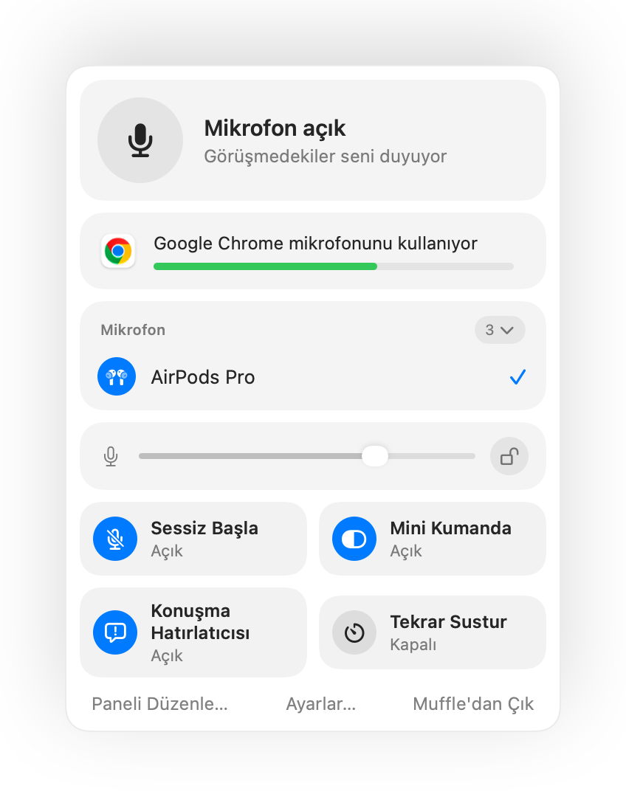

Mac üzerinde mikrofon nasıl susturulur?
Mac klavyesinde mikrofonu kapatmak için özel bir tuş yoktur. Kullandığın uygulamaya ve duruma göre birkaç seçeneğin var, ancak bunların sadece bir kısmı her yerde çalışır.
Kullanabileceğin yollar
- 1
Görüşme uygulamasının kendi düğmesi ya da kısayolu. Sadece o uygulamada ve yalnızca uygulama en öndeyken çalışır.
- 2
Sistem Ayarları, Ses, Giriş bölümü. Giriş seviyesini sıfıra çekmek her mikrofonda tam susturma sağlamaz ve uygulamalar seviyeyi tekrar yükseltebilir.
- 3
Muffle ile genel bir kısayol. Tek bir tuş her uygulamada doğrudan mikrofonu susturur.
- 4
AirPods kulaklığın. Muffle sayesinde sapa basmak, Chrome içindeki Google Meet dahil her görüşmeyi susturur.

- Hangi uygulamada olursan ol, mikrofon kapalıyken Muffle menü çubuğu ikonu kırmızıya döner.
- Muffle uygulamasından çıkış yapmak mikrofonunu her zaman geri açar.
Sorular
Mac sisteminde yerleşik bir mikrofon susturma özelliği var mı?
Tüm sistemi kapsayan bir özellik yok. macOS mikrofonu yalnızca bunu destekleyen uygulamaların içinde susturur. Muffle ise sistem genelinde çalışan gerçek bir susturma özelliği ekler.
Muffle ile susturmak her uygulamayı susturur mu?
Evet. Muffle tüm mikrofonları donanım seviyesinde kapatır, böylece sen açana kadar hiçbir uygulama seni duyamaz.